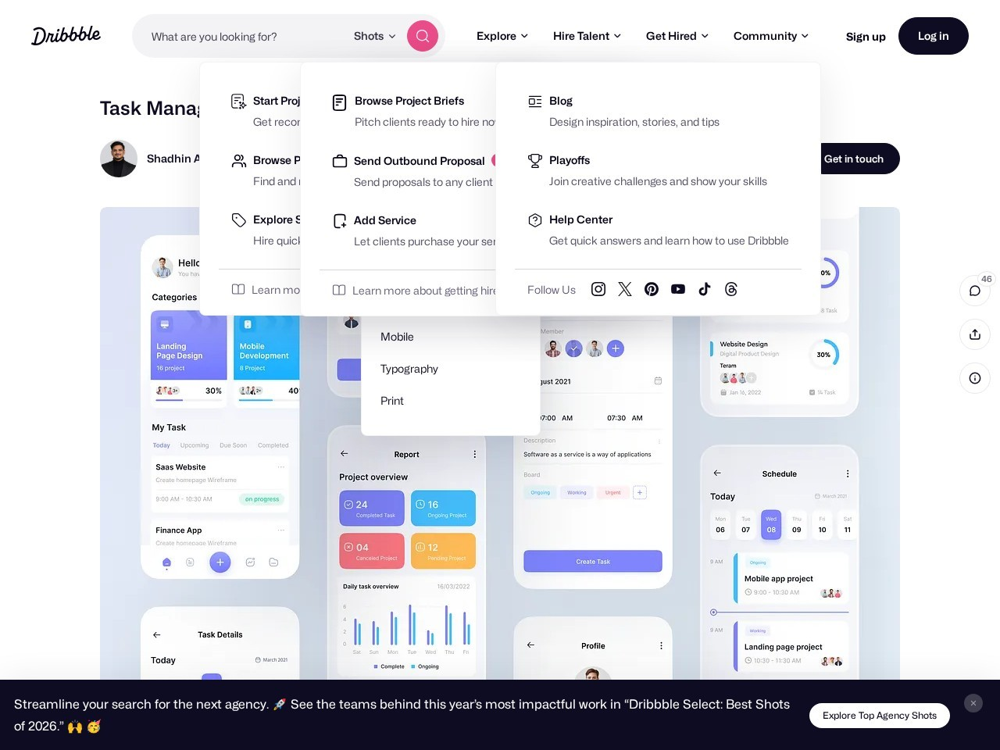
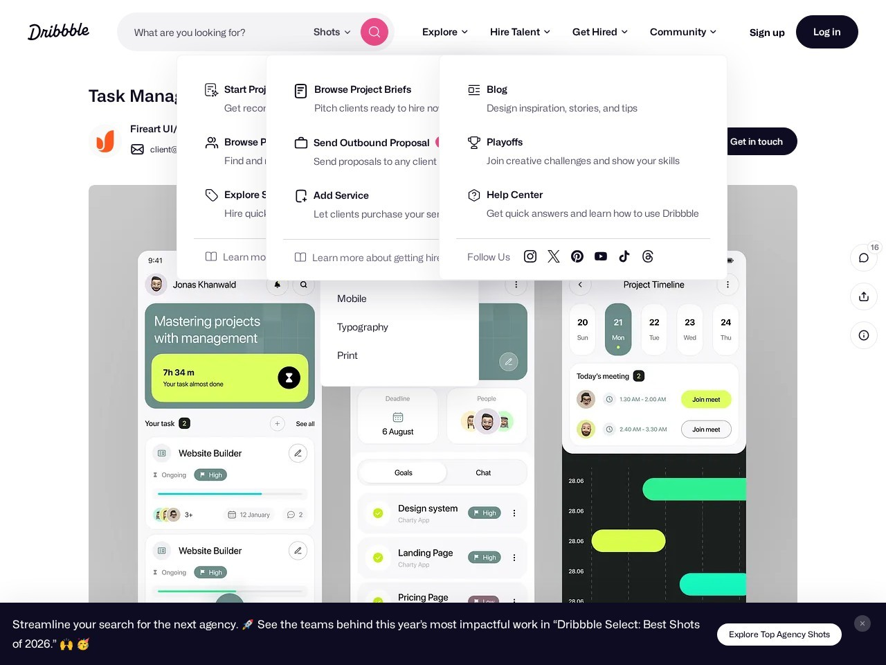
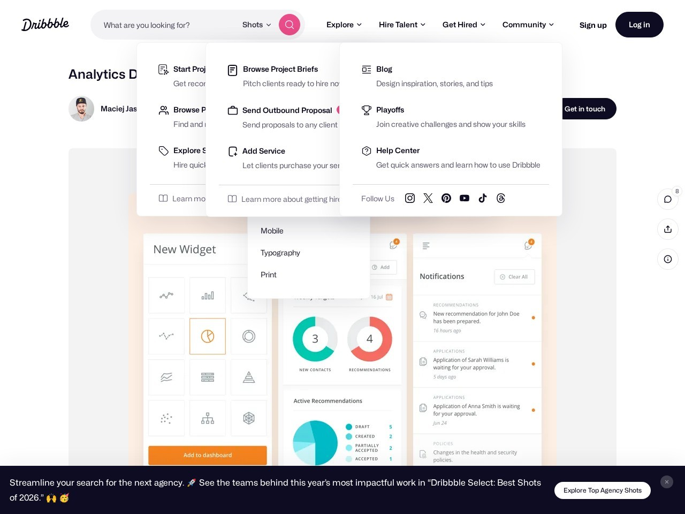
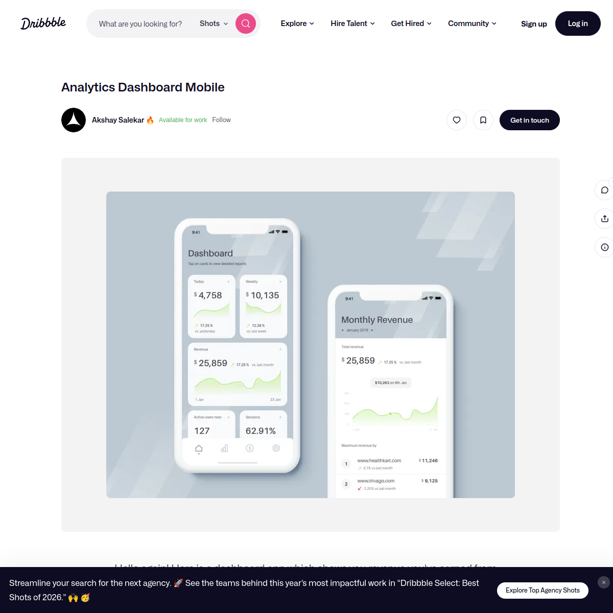
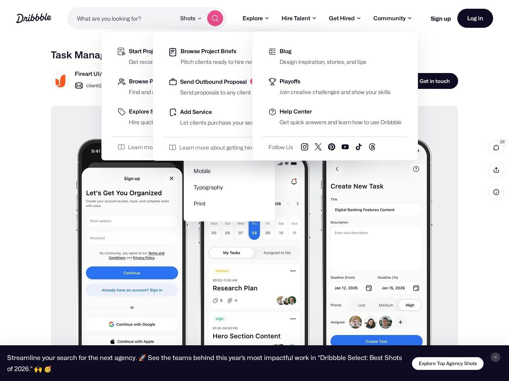
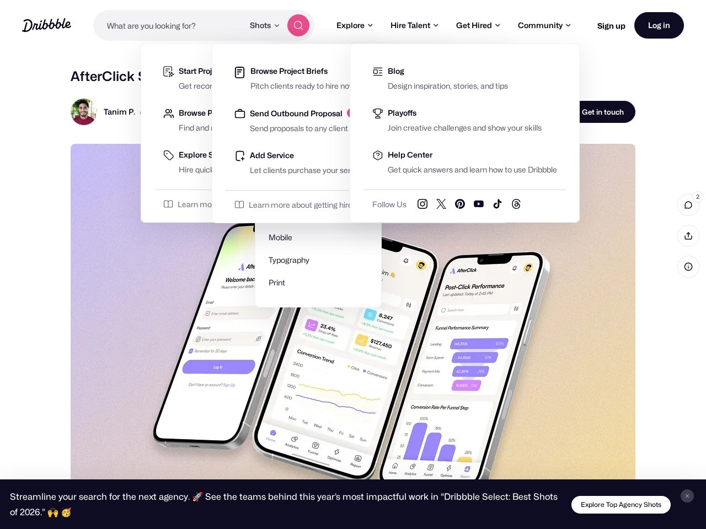
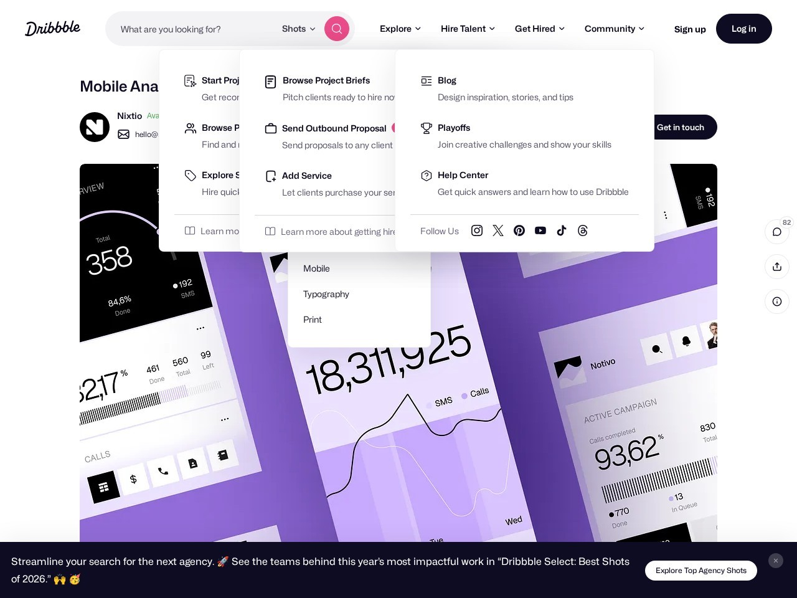
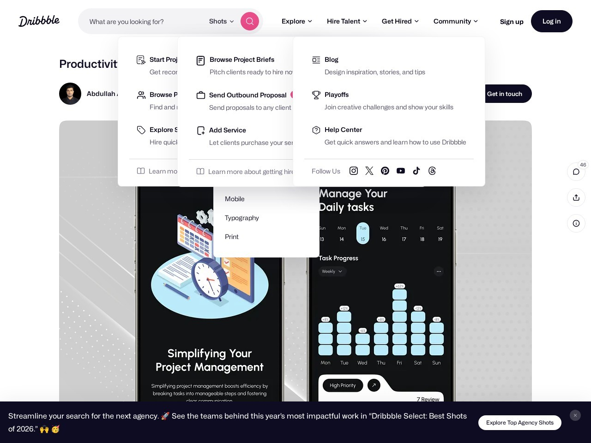
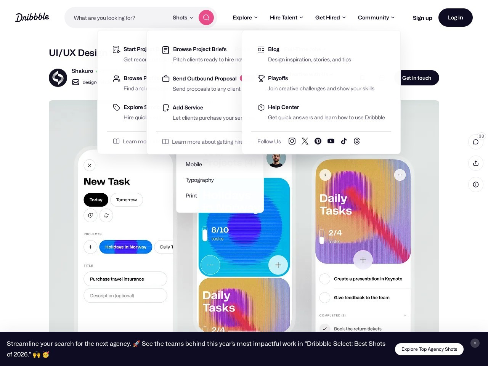
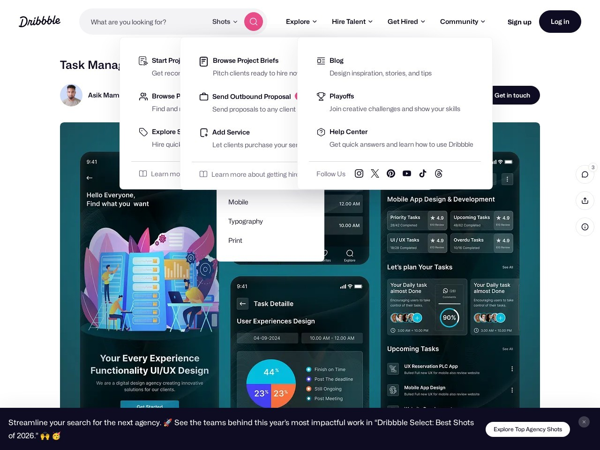

Task Management Mobile App
Overview-first mobile dashboard candidate.
Plain static image grid. No live feeds. No renderer layer. This page shows only local image files inside fixed containers.

Overview-first mobile dashboard candidate.

Summary-led mobile SaaS candidate.

Reduced-depth analytics dashboard candidate.

Reorderable summary card candidate.

High-level work overview candidate.

Modern KPI hierarchy candidate.

Chart-led summary dashboard candidate.

Operational summary screen candidate.

Dashboard-like workload summary candidate.

Compact overview and status grouping candidate.